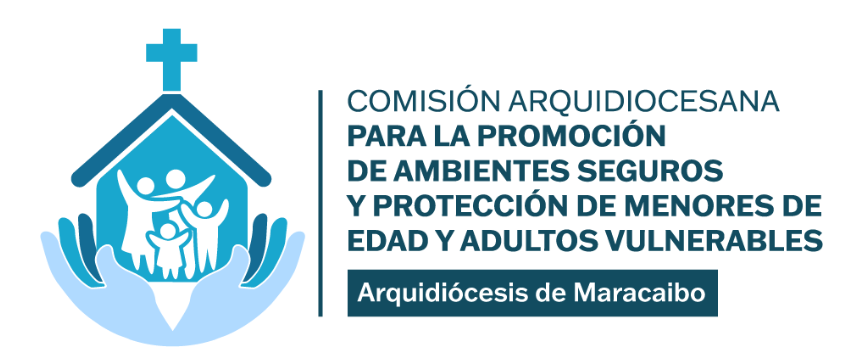

Hacia la Cultura del Buen TratoAmbientes Seguros para Todos
La Arquidiócesis de Maracaibo está comprometida con la protección de menores y adultos vulnerables en todos nuestros espacios pastorales.

Hacia la Cultura del Buen TratoLa Arquidiócesis de Maracaibo está comprometida con la protección de menores y adultos vulnerables en todos nuestros espacios pastorales.
Selecciona tu perfil para encontrar la información que necesitas.
¿Necesitas ayuda o ser escuchado? Aquí encontrarás apoyo psicológico, jurídico y espiritual.
Ver recursos arrow_forwardCómo debemos comportarnos en nuestros espacios eclesiales.
Ver guías arrow_forwardRequisitos de cumplimiento y formación obligatoria para trabajar con menores en la Arquidiócesis.
Ver requisitos arrow_forwardProtocolo de Actuación y Manual de Conducta y Buenas Prácticas.
Ver protocolo arrow_forward
"La protección de los más vulnerables no es una opción pastoral: es una exigencia del Evangelio. Nuestra Arquidiócesis asume el compromiso de tolerancia cero frente a cualquier forma de abuso, y ponemos todos los medios a nuestro alcance para que nuestros espacios sean verdaderamente seguros."— Mons. José Luis Azuaje Ayala Arzobispo de Maracaibo
La Iglesia particular de Maracaibo está firmemente comprometida con la protección de menores y personas vulnerables, implementando protocolos estrictos de prevención, formación de agentes de pastoral y atención a las víctimas. No solo es una obligación legal, sino un mandato moral y espiritual asegurar que cada espacio eclesial sea un refugio de paz y santidad.
Prevención Estricta
Protocolos y normas de conducta para todos los agentes pastorales.
Formación Integral
Capacitación continua y sensibilización para todo el clero y laicado.
Atención a Víctimas
Acompañamiento profesional y pastoral a quienes han sufrido abusos.
Equipo multidisciplinario encargado de supervisar los protocolos de seguridad, realizar auditorías constantes y capacitar a todos los agentes de pastoral en el territorio arquidiocesano.
Si tienes conocimiento de alguna transgresión al Manual de Comportamiento y Buenas Prácticas o los Protocolos, comunícate con nosotros. Todas las comunicaciones son tratadas con estricta confidencialidad.
Abg. Alberto Sovalbarro
Llama primero a las autoridades civiles:
CICPC: 911 · Ministerio Público
Descarga el material de formación, conoce los protocolos y únete a nuestra misión de proteger a los más vulnerables.